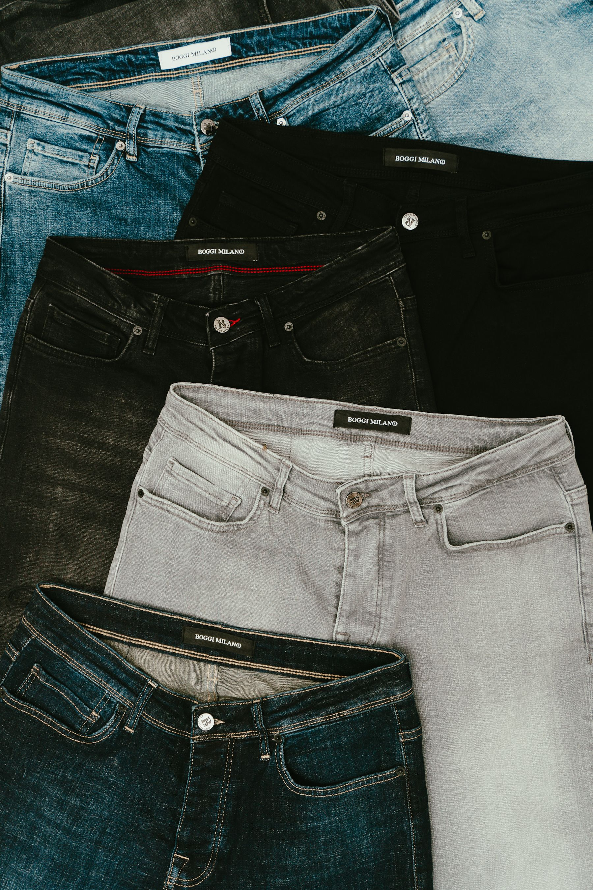

Suitable garments
We review fabric, construction and existing seams before deciding what adjustments are possible.

PERSONALISED GARMENT CARE
Hems, tapering and waist adjustments for trousers and jeans.
Estimated from ₹180
Request this service ↗We review fabric, construction and existing seams before deciding what adjustments are possible.
Length, shape, fastenings or construction changes depend on the selected service and garment.
Share relevant measurements, a fit reference or request assistance when preparing your booking.
Requirement review → garment inspection → tailoring work → finish review → return arrangements. Turnaround and final pricing need confirmation after the garment requirements are assessed.
YOUR QUESTIONS
Share any garment-specific questions with your request.
Estimates depend on fabric, garment construction, materials and the changes required. The final quote needs review by the service team.
Add each garment separately to your pickup request, with its own requirements and quantity.
A saved online request is not a confirmed pickup. Service coverage and scheduling must be confirmed separately.
Provide relevant measurements, use a saved measurement profile or request guidance. A reference garment can help explain your preferred fit.
KEEP EXPLORING
Find the adjustment or repair that matches the rest of your wardrobe.
Review hems, sleeves and body shape.
Consider zipper, seam and button restoration.
Discuss fabric and a personalised design.
THE DETAILS MAKE THE DIFFERENCE.
Review the service details above, then share your garment requirements and preferred fit.